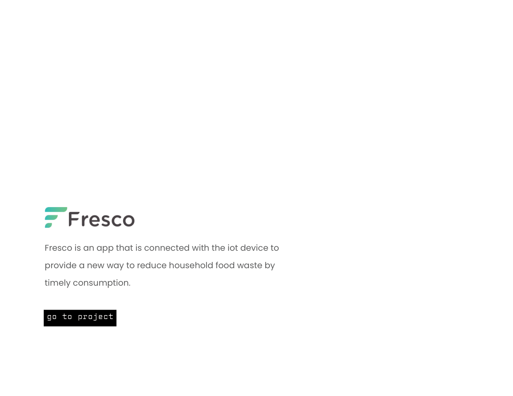
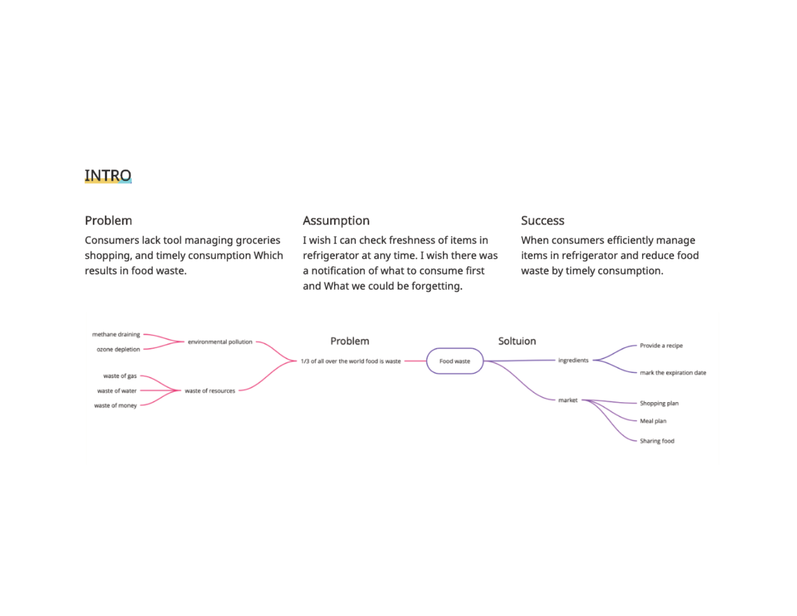
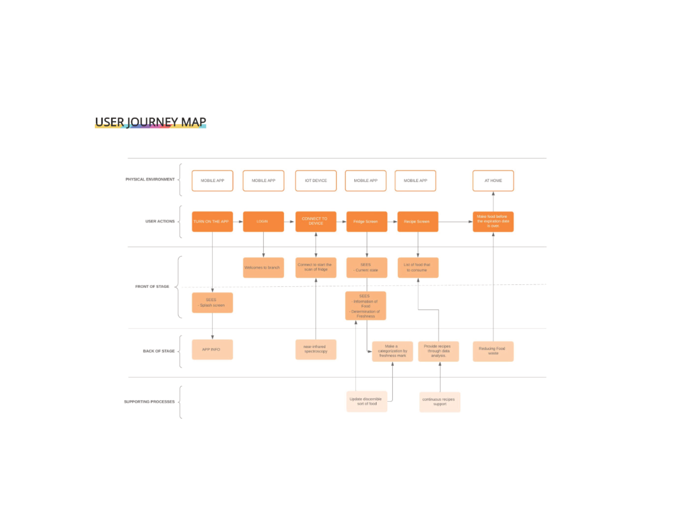
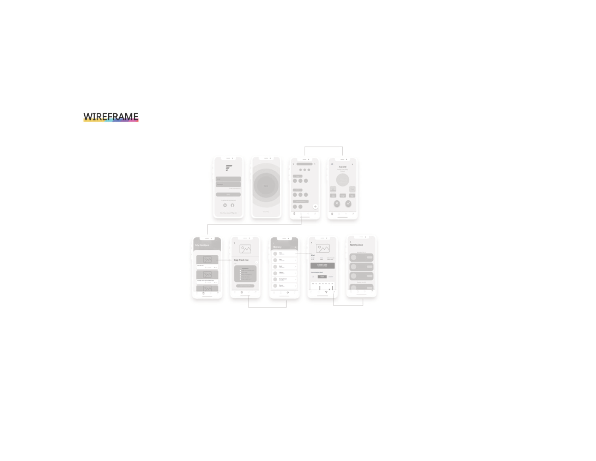
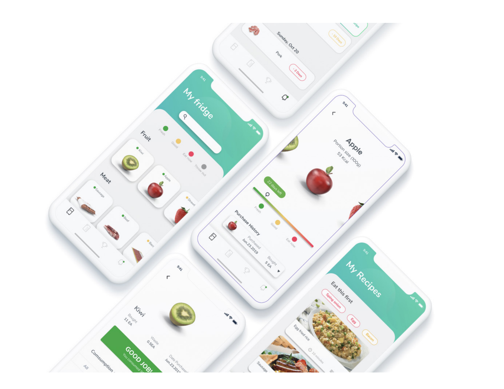

One third of all food produced globally is wasted — and most of it happens at home, invisibly, inside the fridge. People forget what they have, buy duplicates, and throw away food that quietly expired. Fresco is an IoT-connected mobile app that gives the fridge a voice: tracking freshness in real time and nudging users to consume before it's too late.
Five screens covering the full user journey — from onboarding to daily freshness monitoring and smart consumption nudges.





Fresco turned an invisible problem — food waste — into a visible, actionable system. By connecting IoT sensors to a clean mobile interface, it made freshness a first-class metric in the kitchen. The design proved that behavior change doesn't require effort from the user — it requires the right information at the right moment.